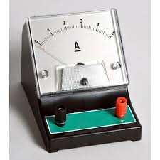
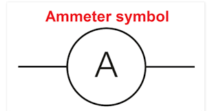
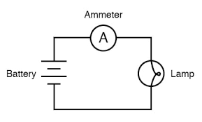
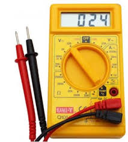
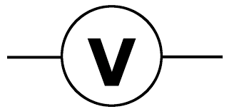
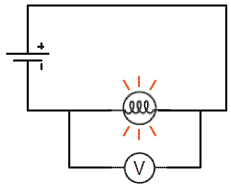

← Back to Concepts
Ammeters and Voltmeters
Ammeters and voltmeters are essential measuring instruments in electrical circuits. Understanding how they work, their internal resistance, and proper connection methods is crucial for accurate circuit measurements and analysis.
What is an Ammeter?
⚡ Ammeter Function
An ammeter measures electric current flowing through a circuit.
It must be connected in series with the circuit element whose current is being measured.


Ideal Ammeter Properties
- Zero Internal Resistance: Ideal ammeter has R_internal = 0
- Series Connection: Must be connected in series with the circuit
- Current Measurement: Measures current in amperes (A)
- Minimal Circuit Disturbance: Should not affect the circuit being measured
Ideal Ammeter
$$R_{ammeter} = 0$$

Real Ammeter Properties
- Small Internal Resistance: Typically 0.1Ω to 1Ω
- Voltage Drop: Creates small voltage drop across the meter
- Current Loading: Slightly reduces current in the circuit
- Accuracy: More accurate for higher currents
Example: Ammeter in Circuit
Problem: A circuit has a 12V battery and 6Ω resistor. An ammeter with 0.5Ω internal resistance is connected in series. Find the current reading.
Step 1: Total Resistance
$$R_{total} = R_{resistor} + R_{ammeter} = 6Ω + 0.5Ω = 6.5Ω$$
Step 2: Current Calculation
$$I = \frac{V}{R_{total}} = \frac{12V}{6.5Ω} = 1.85A$$
Step 3: Voltage Drop Across Ammeter
$$V_{ammeter} = IR_{ammeter} = (1.85A)(0.5Ω) = 0.925V$$
Answer
The ammeter reads 1.85A. The voltage drop across the ammeter is 0.925V.
What is a Voltmeter?
⚡ Voltmeter Function
A voltmeter measures voltage difference between two points in a circuit.
It must be connected in parallel with the circuit element whose voltage is being measured.


Ideal Voltmeter Properties
- Infinite Internal Resistance: Ideal voltmeter has R_internal = ∞
- Parallel Connection: Must be connected in parallel with the circuit
- Voltage Measurement: Measures voltage in volts (V)
- No Current Draw: Should not draw current from the circuit
Ideal Voltmeter
$$R_{voltmeter} = \infty$$

Real Voltmeter Properties
- High Internal Resistance: Typically 10MΩ to 100MΩ
- Small Current Draw: Draws tiny current from the circuit
- Voltage Loading: Slightly reduces voltage being measured
- Accuracy: More accurate for higher resistances
Example: Voltmeter in Circuit
Problem: A 12V battery is connected to a 6Ω resistor. A voltmeter with 10MΩ internal resistance measures the voltage across the resistor. Find the voltmeter reading.
Step 1: Equivalent Resistance
$$R_{eq} = \frac{R_{resistor} \times R_{voltmeter}}{R_{resistor} + R_{voltmeter}}$$
$$R_{eq} = \frac{(6Ω)(10MΩ)}{6Ω + 10MΩ} \approx 6Ω$$
Step 2: Current in Circuit
$$I = \frac{V}{R_{eq}} = \frac{12V}{6Ω} = 2A$$
Step 3: Voltage Across Resistor
$$V_{resistor} = IR_{resistor} = (2A)(6Ω) = 12V$$
Answer
The voltmeter reads 12V. The high internal resistance makes the loading effect negligible.
Internal Resistance Effects
⚡ Loading Effects
Real meters have internal resistance that affects circuit measurements.
The goal is to minimize these effects for accurate measurements.
Ammeter Loading Effect
- Series Resistance: Adds resistance to the circuit
- Current Reduction: Reduces current in the circuit
- Voltage Drop: Creates voltage drop across the meter
- Power Dissipation: Dissipates power as heat
Voltmeter Loading Effect
- Parallel Resistance: Reduces equivalent resistance
- Current Increase: Increases current in the circuit
- Voltage Reduction: Reduces voltage being measured
- Power Consumption: Consumes power from the circuit
Example: Loading Effect Comparison
Problem: Compare the loading effects of an ideal vs. real ammeter in a 12V, 6Ω circuit.
Ideal Ammeter (R = 0Ω)
$$I_{ideal} = \frac{12V}{6Ω} = 2A$$
Real Ammeter (R = 0.5Ω)
$$I_{real} = \frac{12V}{6.5Ω} = 1.85A$$
Loading Error
$$Error = \frac{I_{ideal} - I_{real}}{I_{ideal}} \times 100\% = \frac{2A - 1.85A}{2A} \times 100\% = 7.5\%$$
Answer
The real ammeter shows 7.5% lower current due to loading effect.
Meter Selection Criteria
For Accurate Current Measurement
- Low Internal Resistance: R_ammeter << R_circuit
- Appropriate Range: Select range that includes expected current
- Precision: Choose meter with sufficient precision
- Safety: Ensure meter can handle maximum expected current
For Accurate Voltage Measurement
- High Internal Resistance: R_voltmeter >> R_circuit
- Appropriate Range: Select range that includes expected voltage
- Precision: Choose meter with sufficient precision
- Safety: Ensure meter can handle maximum expected voltage
Digital vs. Analog Meters
Digital Meters
- High Input Impedance: Very high internal resistance
- Precise Readings: Digital display with high precision
- Auto-ranging: Automatically selects appropriate range
- Additional Features: Often include resistance, capacitance, frequency
Analog Meters
- Moving Coil Design: Galvanometer-based measurement
- Visual Response: Needle movement shows changes
- Range Selection: Manual range selection required
- Parallax Error: Reading angle affects accuracy
Key Takeaways
- Ammeters: Connected in series, low internal resistance, measure current
- Voltmeters: Connected in parallel, high internal resistance, measure voltage
- Loading Effects: Real meters affect circuit behavior
- Ideal Properties: Ammeter R = 0, Voltmeter R = ∞
- Selection Criteria: Choose meters based on circuit requirements
- Accuracy: Minimize loading effects for precise measurements